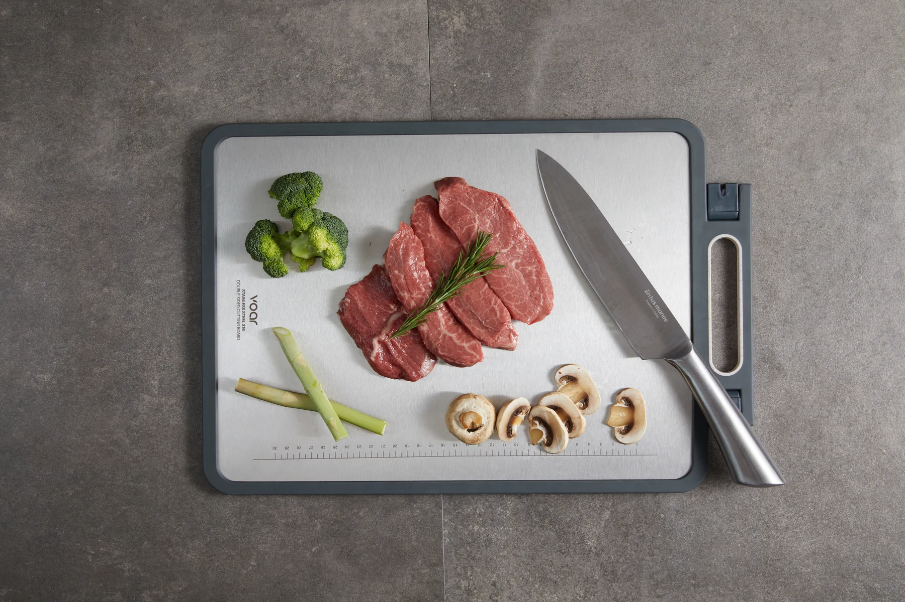
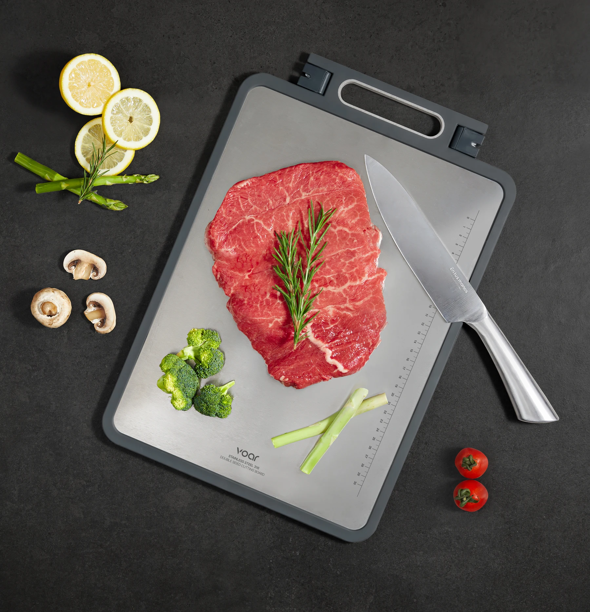
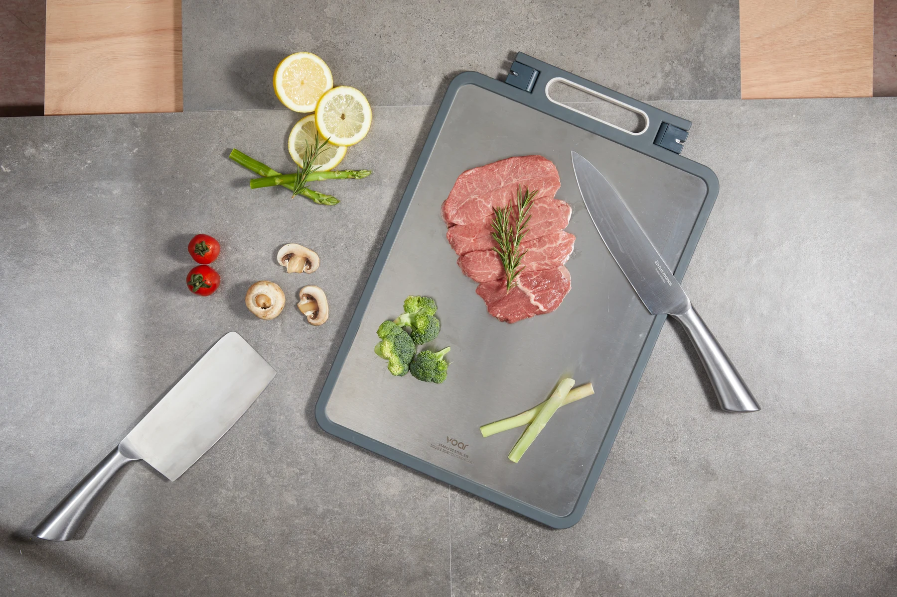
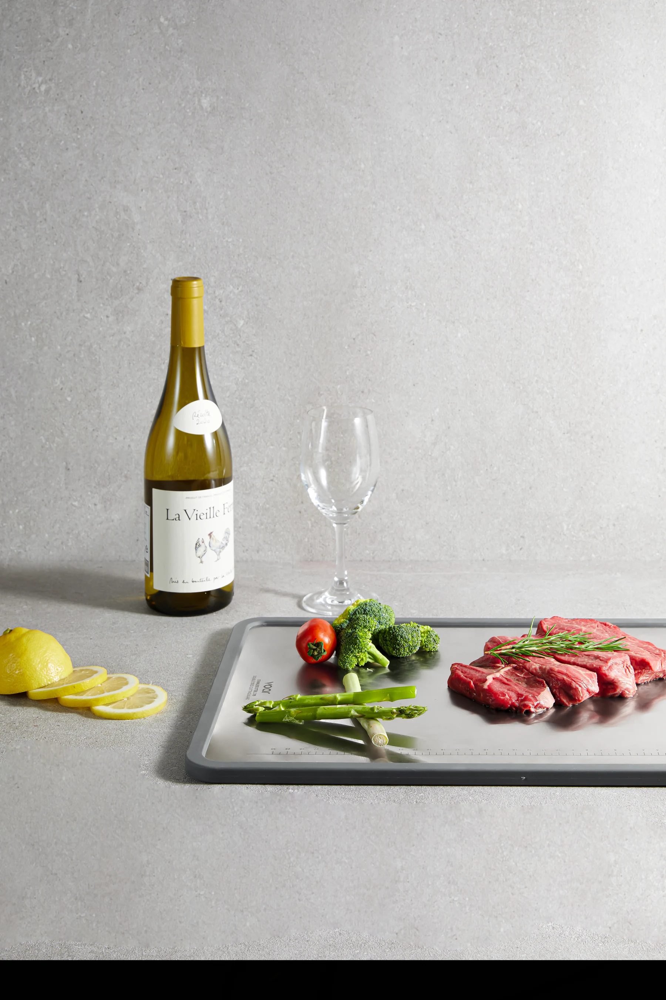
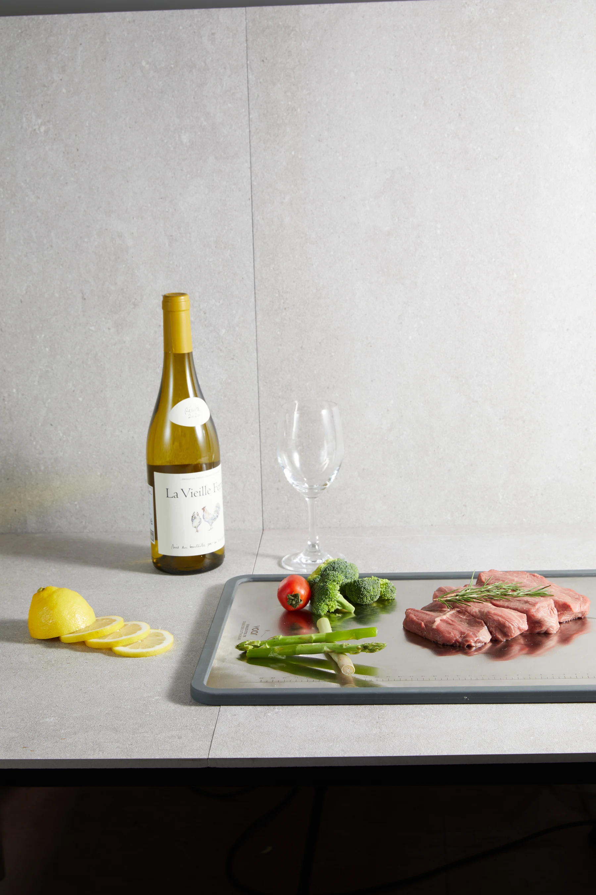

← 모든 작업물PHOTOGRAPHY / 04
촬영 · 보정
주방용품 내부 연출컷 촬영
2023- 제작 연도
- 2023
- 작업 기간
- 촬영 1일, 보정 1일
- 사용 프로그램
- Adobe Photoshop, Capture One, Lightroom
- 작업일자
- 2023.08.01
기여도 및 작업 범위
기여도 100% 개인 작업 사진 촬영/디렉 전반적인 연출 및 후보정 진행





